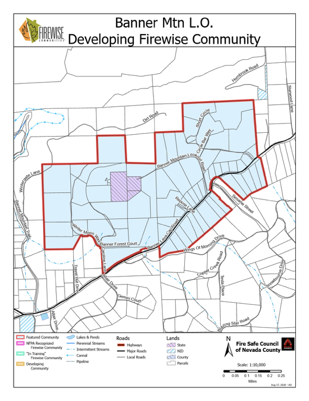

The map below shows the Banner Mountain Lookout Firewise Community boundary and the parcels within it.
Firewise Community Boundary

Source: Fire Safe Council of Nevada County. Open full-resolution PDF.
Our Firewise Community boundary, broken down by sub-area
The map below shows the Banner Mountain Lookout Firewise Community boundary and the parcels within it.

Source: Fire Safe Council of Nevada County. Open full-resolution PDF.